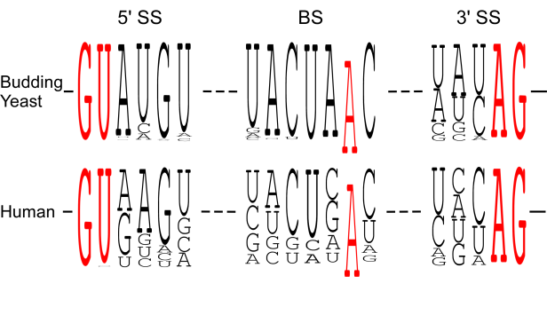
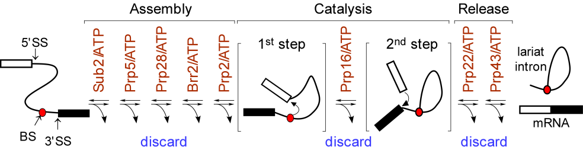
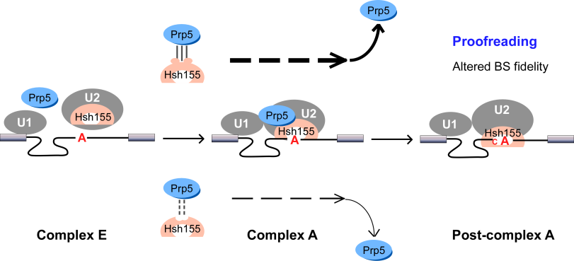
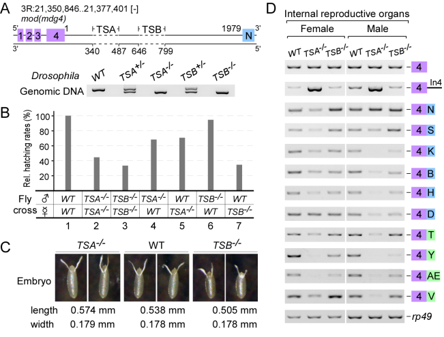

Splicing Proofreading by ATPases/RNA helicases

We found that spliceosomal ATPase Prp5 modulates branch site fidelity by competing with the stability of the BS : U2 snRNA duplex (Mol Cell 2007, MCB 2012, Cell Rep 2013), and ATPase Prp28 proofreads 5' splice site through the stability of the 5'SS : U6 snRNA duplex (NAR 2013). Recently, we found that protein interactions between splicing factors (Prp5-SF3B1), and between transcription factor and splicing factor (Prp5-Spt8) are also critical for splicing proofreading at the branch site region (Gene Dev 2016, NAR 2020).
.
SF3B1/Hsh155 disease mutations affect interaction with ATPase Prp5 and result in altered branch site selectivity

Mutations in the U2 snRNP component SF3B1 are prominent in myelodysplastic syndromes (MDS) and other cancers. We find that hsh155 mutant alleles in S. cerevisiae, counter parts of frequent SF3B1 mutations in cancers, specifically change splicing of suboptimal BS pre-mRNA substrates. Mutations in the Hsh155 HEAT motifs from both human disease and yeast genetic screens alter the physical interaction with Prp5 and branch region specification, and phenocopy mutations in Prp5. The altered physical interaction results in changed loading of the BS–U2 duplex into the SF3B complex during pre-spliceosome formation. These results provide a mechanistic framework to explain the consequences of intron recognition and splicing of SF3B1 mutations found in disease (Gene Dev 2016).
Conserved TSA and TSB sequences promote Trans-splicing in Drosophila

Trans-splicing in trypanosomes and nematodes has been characterized and utilizes spliced leader RNA, the mechanism of trans-splicing in higher eukaryotes remains unclear. We found two intronic RNA sequences, TSA and TSB, are critical to promote trans-splicing of Drosophilia mod(mdg4), a classic trans-spliced gene. In TSA, a 13-nt motif is conserved among Drosophilia species and is essential and sufficient for trans-splicing; in TSB, a conserved secondary structure acts as an enhancer. Deletions of TSA and TSB cause developmental and viability defects in flies. TSA binds U1 snRNP through base-pairing between the conserved motif and U1 snRNA. Compensatory changes in U1 snRNA partially rescue trans-splicing of TSA mutants, demonstrating that U1 recruitment is critical to promote trans-splicing in vivo. The conserved motifs are observed in other trans-spliced genes, including lola; thus, these findings represent a novel and general mechanism of Trans-splicing in high eukaryotes (Gene Dev 2015).